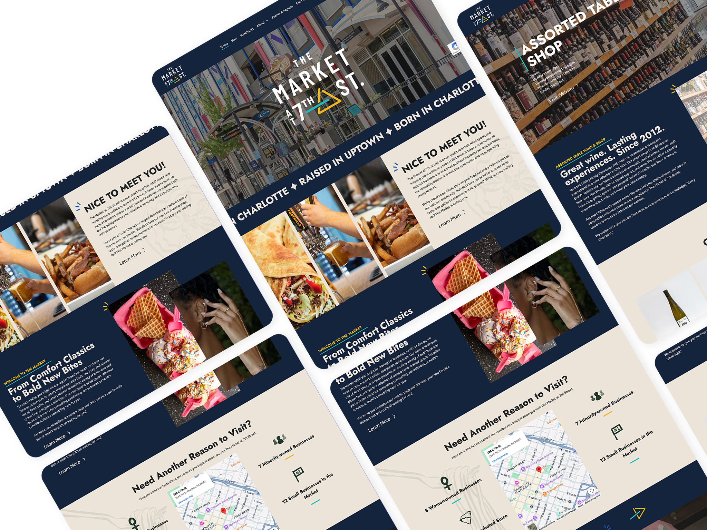
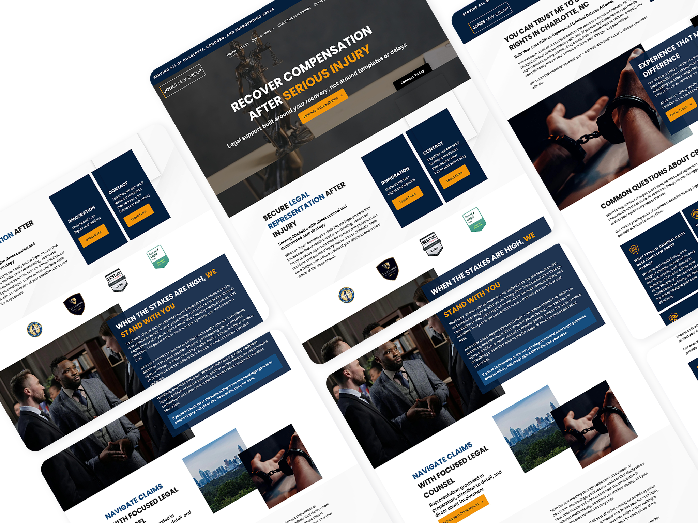
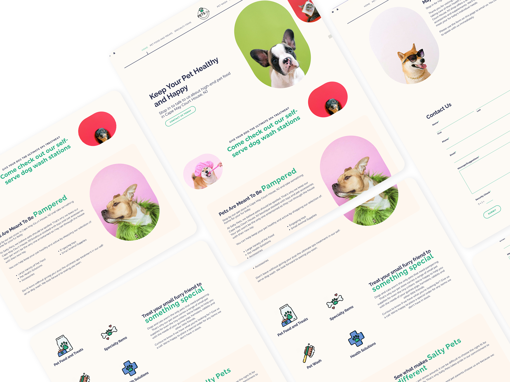
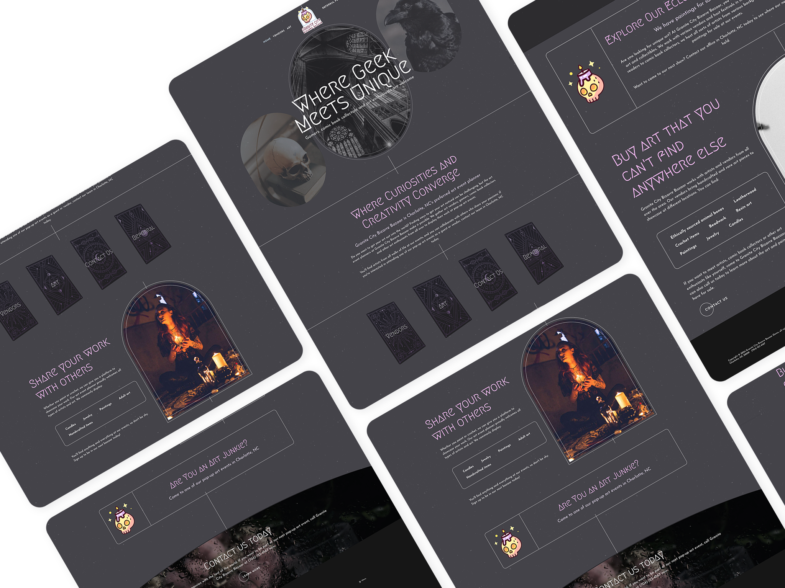
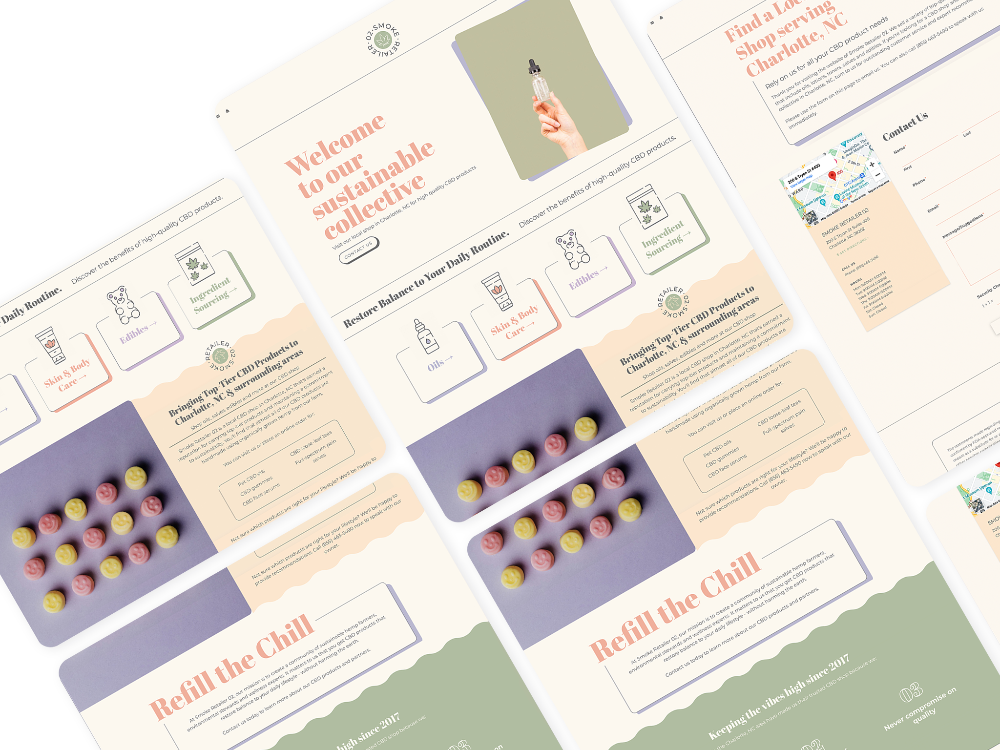

Hey, I'm Kelli Walsh
Visual & Interactive
My passion lies in clean modern front-end web development and graphic design. I love a good black-and-white design but know the right spot for a splash of color. I have a BFA with a concentration in Graphic Design along with a certificate in Full-Stack Web Development.
I try to find inspiration in anything around. From the flora and fauna to the architecture of the buildings around me. I currently work outside Charlotte, NC. Where I live with my husband and cat.
Please feel free to look at my work below, and let's chat!
My Work

Townsquare Interactive
Market at 7th Street Redesign
A modern website redesign for The Market at 7th Street completed at Townsquare Interactive, built on Duda CMS. The refreshed design focuses on clean layout structure, elevated visual storytelling, and intuitive navigation to better showcase vendors, events, and essential visitor information. With a mobile-first approach and improved content hierarchy, the site delivers a streamlined, engaging experience that reflects the energy and community feel of the market.
See Live Site
Townsquare Interactive
Jones Law Demo Site
A clean, conversion-focused legal services website template designed for Townsquare Interactive and built on Duda CMS. The layout emphasizes clear navigation, strong calls-to-action, and easy access to core practice areas, helping users quickly understand services and connect with legal professionals. The design balances modern visuals with intuitive UX, making it scalable, mobile-friendly, and ready for client deployment.
See Live Site


Townsquare Interactive
Pets Demo Site
A user-friendly pet shop website template built on a custom CMS for Townsquare Interactive. Designed to showcase pet food, specialty items, health solutions, and services like pet wash, the layout balances clear navigation with engaging content to help customers find products and services quickly. The design is clean, visually appealing, and tailored for businesses in the pet retail space, making it easy to adapt for real-world clients.
See Live Site
Townsquare Interactive
Site for Granite City Bizarre Bazaar
A vibrant art event website built on a proprietary CMS for a client of Townsquare Interactive. Designed to showcase the Granite City Bizarre Bazaar, the site highlights upcoming pop-up art events and brings together artists, gamers, and collectors with clear navigation and engaging content. The layout emphasizes featured art categories and easy vendor/visitor interaction, combining creative visuals with intuitive user experience.
See Live Site


Townsquare Interactive
CBD Demo Site
A high-impact CBD website template designed for Townsquare Interactive and built on a proprietary CMS. This concept leans into bright color palettes and bold motion design to create a striking, contemporary look that captures attention and reinforces brand personality. Animated elements and clear content hierarchy guide users through product offerings while maintaining a smooth, engaging browsing experience optimized for modern retail brands.
See Live Site
Contact Me Today
Charlotte, NC
(912) 856-2277
KelliAJarrell@gmail.com